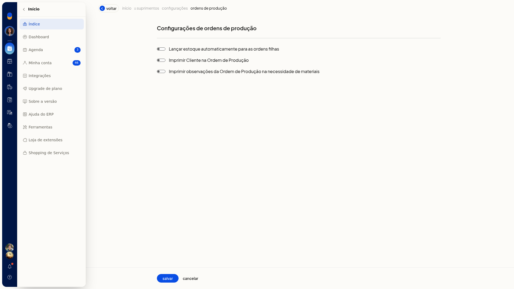

Imprimir ordem de produção, estrutura e necessidade de materiais
No ERP da Olist, você imprime a ordem de produção, a estrutura e a necessidade de materiais a partir da lista de ordens. Dá para imprimir uma ordem pela linha ou várias ordens de uma vez.
Importante
- O que sai na impressão da ordem e da necessidade de materiais depende das opções em Configurações de ordens de produção.
- Se a configuração não aparecer para você, peça acesso ao administrador da conta.
Instruções
Pela linha da ordem
-
Acesse Suprimentos > Ordens de Produção.


-
Na linha da ordem, abra o menu de ações.

-
Clique em Imprimir detalhe, Imprimir estrutura ou Imprimir Necessidade materiais.
Em lote
- Acesse Suprimentos > Ordens de Produção.
- Selecione as ordens na lista.
- Clique em Imprimir ou em Imprimir necessidade materiais.
Informações adicionais
O que pode sair na impressão
-
Acesse Configurações > Configurações ERP.
-
Em Suprimentos, abra Configurações de ordens de produção.

-
Marque Imprimir Cliente na Ordem de Produção para o cliente sair na ordem.
-
Marque Imprimir observações da Ordem de Produção na necessidade de materiais para as observações saírem na necessidade de materiais.
-
Clique em Salvar.
